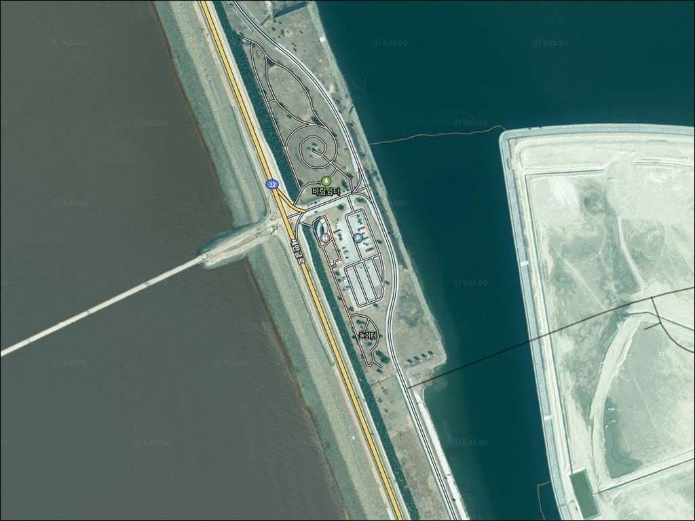
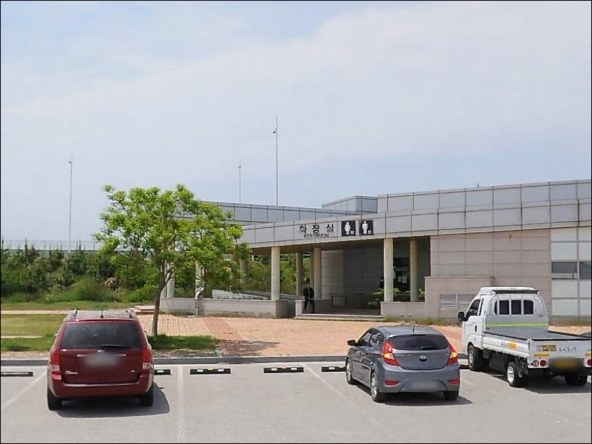
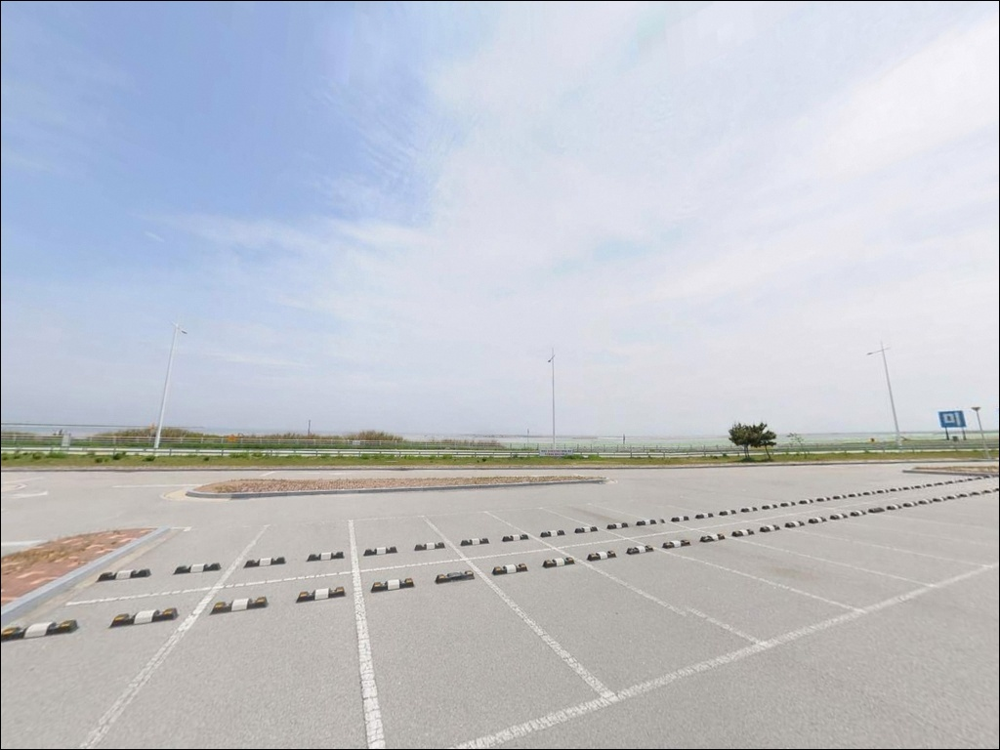
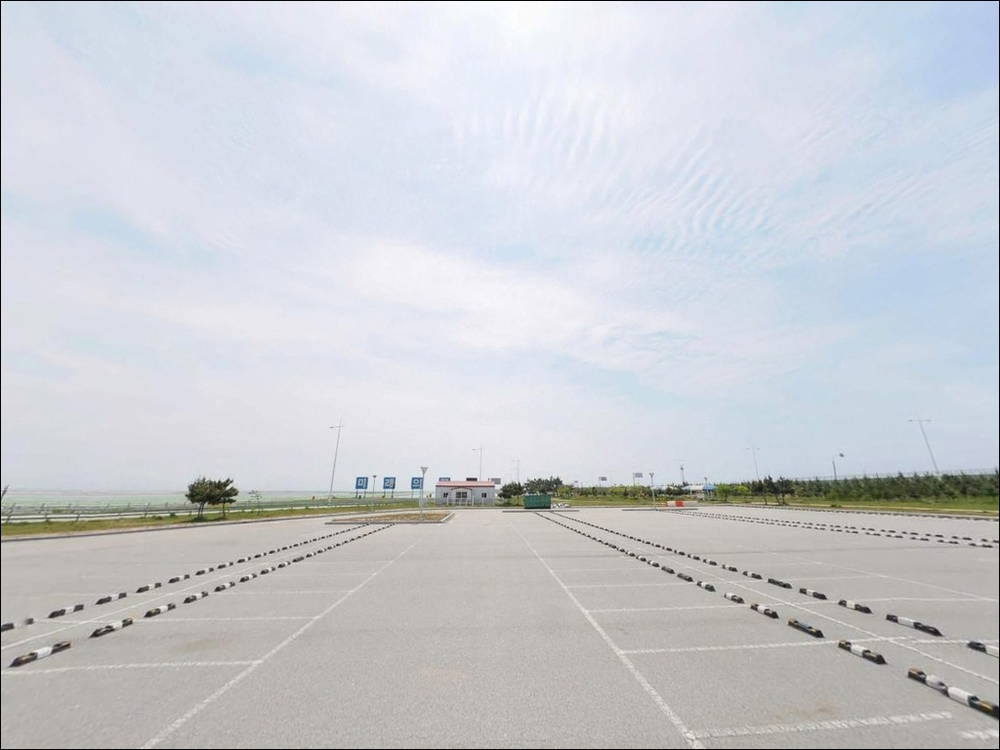
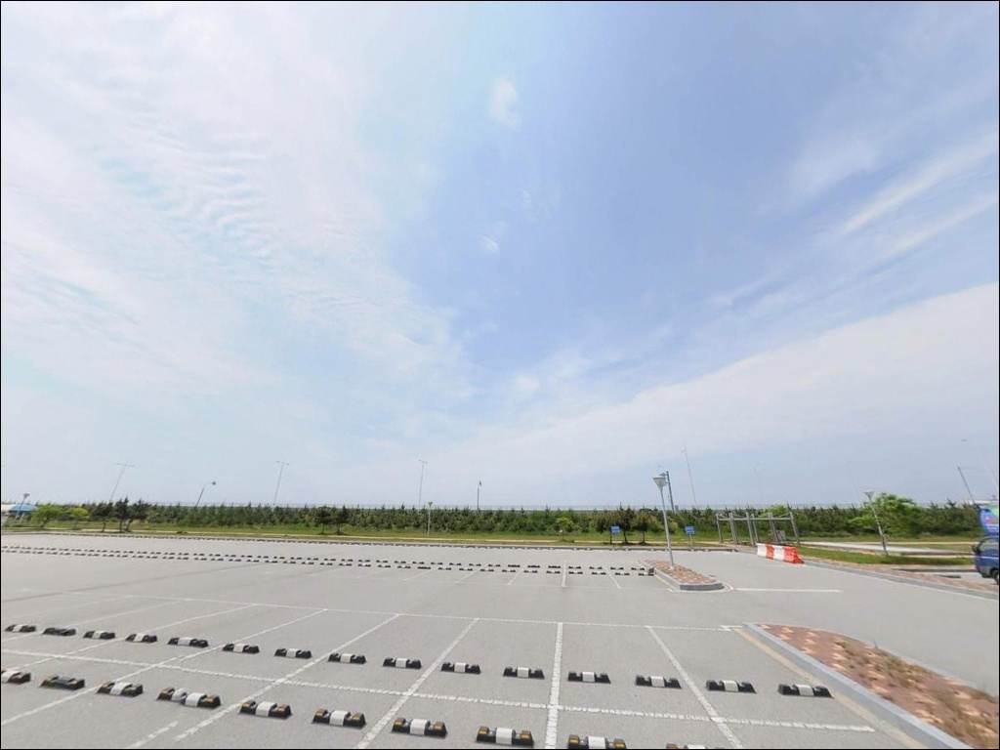
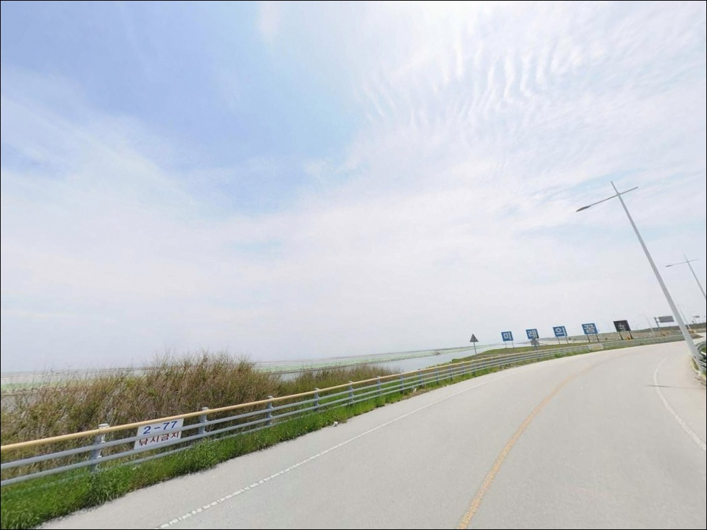
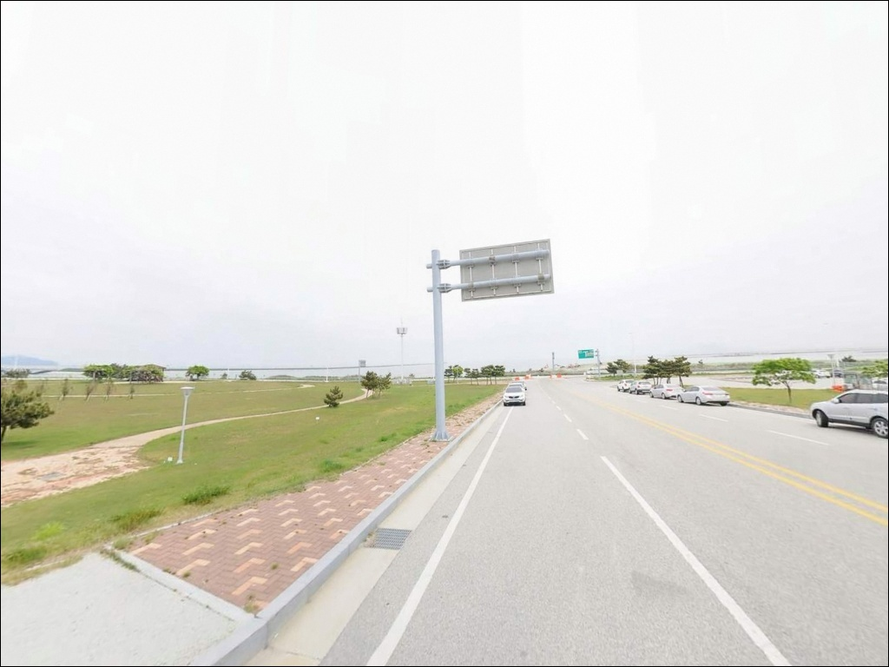
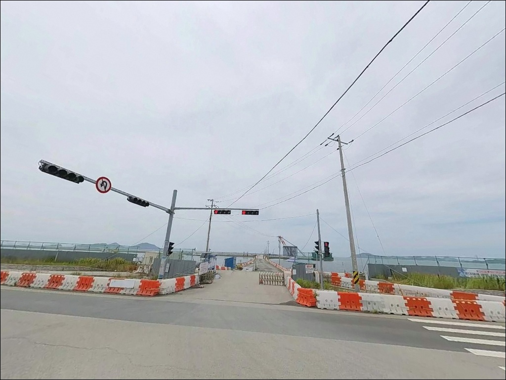
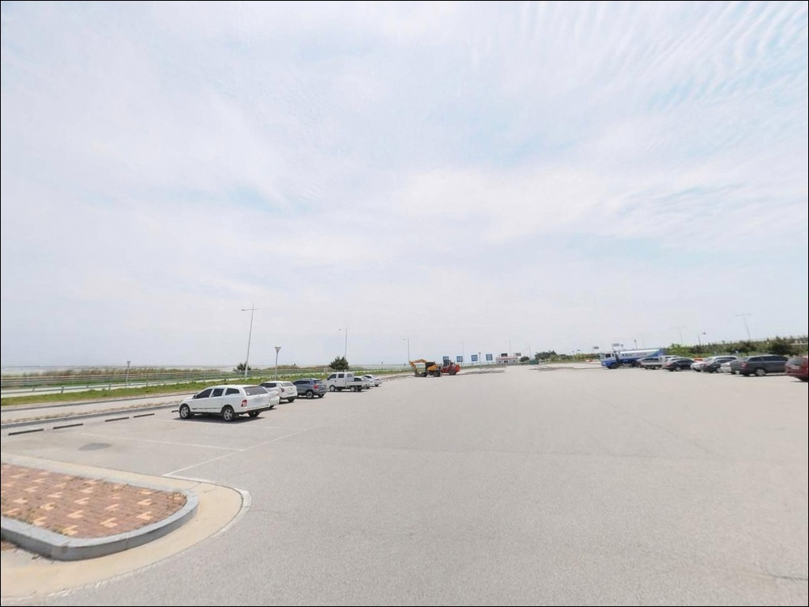

바람쉼터, 전북 김제시 고요함이 매력인 차박, 낚시 감성 장소
이 페이지에는 광고(제휴 링크 포함)가 있으며, 광고 링크를 통해 구매하면 운영자가 판매 수익 또는 수수료를 받을 수 있습니다. 포인트 사진: 카카오맵 스카이뷰·로드뷰. 이 페이지의 지도·사진 이미지는 카카오맵의 실제 서비스 이미지와 다를 수 있습니다.


포인트 안내
바람쉼터
전북 김제시 진봉면 심포리 2428
새만금방조제에서 낚시 자리를 잡을 때
가장 많이 틀리는 판단이 있습니다.
물때와 풍속을 확인하지 않고 진입하는 것입니다.
방조제는 사방이 트인 개방 지형이라
사리 전후 조류가 거세질 때는
어떤 채비를 써도 흘러버리고,
강풍까지 더해지면 낚시 자체가 불가능한
상황이 됩니다.
전북 김제시 진봉면 심포리에 위치한
바람쉼터는 새만금방조제 본선 위에 조성된
전망·휴식·낚시를 겸하는 쉼터입니다.
방조제 외측은 서해 개방 수역과 접하고,
넓은 포장 주차장과 전망대 겸 화장실 시설을
갖추고 있어 낚시꾼들의 차박 거점으로
꾸준히 활용되는 포인트입니다.
이 글은 바람쉼터의
진입 여건, 차박 체류 조건,
낚시 방식별 지형 적합성에 집중합니다.
조황 단정이나 특정 어종 보장은
이 글의 범위에 포함되지 않습니다.

1. 진입 동선과 포인트 접근성
바람쉼터는 새만금방조제 본선 도로,
새만금로를 통해 직접 진입하는 구조입니다.
방조제 도로는 포장 상태가 양호하고
경사가 거의 없는 직선형 구간이라,
차량 접근 자체에서의 어려움은
크지 않습니다.
쉼터 내부에는 포장 주차장이 마련되어 있어
승용차는 물론 캠핑카나 대형 SUV도
진입과 회차가 수월한 편입니다.
주차 공간 규모가 넉넉한 편이라
주말 방문이라도 자리 걱정은 크지 않은
구조입니다.
낚시 자리까지의 이동 동선은 단순합니다.
주차 후 방조제 난간 방향으로
걸어 나가면 외측 낚시 포인트에
바로 접근할 수 있습니다.
단, 방조제 석축은 이끼나 습기로
미끄러울 수 있어 진입 전 발판 상태를
먼저 확인하는 것이 기본입니다.

2. 차박 환경과 야간 체류 여건
바람쉼터는 민가가 없는 방조제 위 시설입니다.
야간에는 차량 통행이 크게 줄어들고
주변이 조용해지는 환경입니다.
쉼터 구역 내 가로등이 설치되어 있어
야간 기본 시야는 확보되지만,
방조제 바깥쪽은 어둠이 짙은 편이라
개인 조명 장비는 별도로 챙겨야 합니다.
이름 그대로 바람이 강한 지역입니다.
방조제는 사방에 바람막이가 없는 개방 지형이라
기상 조건에 따라 차박 중에도
강풍이 차체를 흔드는 상황이 생길 수 있습니다.
풍향과 풍속은 전날 저녁부터
기상청 예보로 확인해 두는 것이
체류 쾌적도를 결정하는 핵심 변수입니다.
차박을 낚시와 함께 계획하는 경우라면
조류가 느려지는 정조 타이밍과
야간 낚시 시간을 미리 맞춰두는 방식이
이 포인트를 가장 효율적으로 활용하는
동선입니다.
프라이버시는 개방형 지형 특성상
낮 시간에는 방문객 왕래가 있으나,
야간에는 조용한 편입니다.


3. 주변 편의시설 및 인프라 현황
바람쉼터는 새만금방조제 중간 구간에 위치해
반경 3km 이내에 편의점·마트·주유소를
기대하기 어렵습니다.
방조제 도로 특성상 쉼터 시설 외에는
상업 시설이 없는 구간입니다.
식수·얼음·낚시 소품·연료는
출발 전에 모두 준비해야 합니다.
쉼터 내에는 2층 전망대를 겸한
공중화장실이 운영되고 있습니다.
이 점은 장시간 체류나 야간 낚시 시
실질적인 편의 조건이 됩니다.
반경 10km권으로 이동하면
심포항 인근 횟집 단지와
생활 상권을 이용할 수 있습니다.
낚시 소품이 부족하거나
추가 식재료가 필요하다면
심포항 방향으로 이동하는 동선이
가장 현실적인 대안입니다.

4. 낚시를 망치지 않으려면 먼저 확인해야 할 것들
바람쉼터 방문 전 가장 먼저 확인할 것은
물때와 풍속입니다.
서해 조석 간만의 차가 크기 때문에
사리 전후에는 방조제 외측 조류가 강해져
채비를 고정하기 어려운 상황이 만들어집니다.
바다타임에서 심포리 또는 군산 기준
물때를 미리 확인하고,
조금 전후 또는 정조 타이밍에 맞춰
출발 시각을 계획하는 것이 기본입니다.
방조제 석축 지형은 이끼와 습기로
미끄러움이 심한 구간이 있습니다.
낚시 자리를 잡기 전에
발판 상태를 먼저 확인하고,
구명조끼는 반드시 착용해야 합니다.
야간 낚시는 헤드랜턴을 켠 상태에서
이동하는 것이 사고를 막는 기본 조건입니다.
에깅이나 루어낚시를 목적으로 간다면
바닥 지형 특성상 채비 손실이 발생할 수 있습니다.
여분 채비를 넉넉하게 준비하는 편이 좋고,
배수갑문 인근 구간은 방류 시
유속이 급격히 변하므로
가까운 접근은 삼가야 하는 구역입니다.
출조 전에 새만금 바람쉼터 조황을
검색해 보고 가시기 바랍니다.

5. 지형 기반 낚시 여건 분석
바람쉼터의 낚시 여건을 이해하려면
방조제 외측과 내측의 수역 차이를
먼저 구분해야 합니다.
방조제 외측은 서해 개방 수역과 직접 접해 있어
조류가 흐르고 수심이 확보되는 구조입니다.
방조제 외측 원투 자리는 조류가 흐를 때
채비를 멀리 보낼수록 수심이 확보되는
구조입니다.
방조제 석축은 직선형으로 이어지는 구조라
내항의 돌출 구조물이나 갯바위 지형은
기대하기 어렵습니다.
대신 방조제 외측을 따라 이어지는
연속된 석축 경계가 어종의
이동 경로 역할을 하는 편입니다.
특정 지점에 집중하기보다
외측 방향을 탐색하며 입질 자리를
찾아가는 방식이 이 포인트에 맞습니다.
원투낚시란 봉돌이 달린 채비를 멀리 던져
바닥 근처를 탐색하는 낚시 방식입니다.
방조제 석축 포인트에서는
원투 거리를 확보할수록
수심이 깊어지는 구간에 닿을 수 있어
기본 전략으로 잘 맞는 편입니다.
물때를 맞추지 않으면 방조제 위 강풍과 맞물려
채비 컨트롤 자체가 어려워지는 환경입니다.
최신 조황은 출조 전에 꼭 검색해 보시기 바랍니다.


6. 포인트에 어울리는 낚시 스타일
이 포인트에서 기본이 되는 낚시는
원투낚시입니다.
방조제 외측 방향으로 채비를 멀리 보낸 뒤
바닥을 탐색하는 방식으로,
붕장어·숭어·도다리 등
서해 연안 어종을 기대해 볼 수 있습니다.
특히 야간 정조 타이밍에
채비를 멀리 보내 바닥을 기다리는
방식이 유효한 구조입니다.
루어낚시도 이 포인트 구조와 잘 맞습니다.
우럭·광어·삼치 등을 대상으로
지그헤드나 메탈지그 채비를
방조제 외측 방향으로 탐색하는 방식이
기본입니다.
조류가 흐르는 타이밍에
루어를 흘리듯 운용하면
반응이 살아나는 편입니다.
가을철에는 에깅을 노려볼 수 있습니다.
에깅이란 갑오징어·주꾸미를 대상으로
에기(인조 미끼)를 사용하는 루어낚시 방식입니다.
새만금방조제 일대에서 가을 주꾸미·갑오징어
시즌에 방조제 쉼터 구간 낚시가
활발해지는 패턴이 있습니다.
에기를 외측 방향으로 던진 뒤
바닥 까지 가라앉혀 천천히 탐색하는
방식이 이 지형에 맞습니다.

7. 대안 포인트와 플랜 B 동선
바람쉼터에서 조류가 너무 거세거나
풍속이 낚시 여건을 크게 해치는 날에는
심포항이 첫 번째 대안입니다.
심포항은 김제 진봉반도 끝에 위치한
지방어항으로, 항구 구조 덕분에
바람 영향이 덜하고
원투·찌·루어 등 다양한 방식으로
공략할 수 있는 분위기의 포인트입니다.
가력도항도 이동 거리가 짧은 대안입니다.
외항 일부 구간은 진입 제한이 있으나
내항에서 비교적 안정적인 낚시가 가능합니다.
기수역이란 바닷물과 민물이 혼합되는 수역으로,
숭어·붕장어처럼 두 환경을 오가는
어종이 서식하는 지형입니다.
가력도항 인근은 이런 기수역 성격이
남아 있어 계절에 따라
독특한 조과를 기대해볼 수 있는
구간이기도 합니다.
차박 거점을 바꾸고 싶다면
방조제를 따라 이어지는
너울쉼터, 소라쉼터 등 인근 쉼터들이
대안이 됩니다.
바람쉼터와 유사한 구조의 포장 주차장을
갖추고 있어, 혼잡도나 분위기를
비교하며 자리를 선택하는 방식으로
활용하기 좋습니다.

조류와 바람을 읽으면
바람쉼터가 다르게 보입니다
원투낚시나 루어낚시를 즐기는 낚시인이라면
바람쉼터의 방조제 외측 구조는
충분히 공략해볼 만한 조건을 갖추고 있습니다.
가을철 에깅 시즌을 노리는 낚시꾼에게도
주꾸미·갑오징어 탐색 포인트로
활용 가능한 지형입니다.
다만 방조제라는 지형 특성을
무시하고 방문하면 낚시보다 바람과 싸우는
하루가 될 가능성이 있습니다.
물때 확인, 풍속 체크, 여분 채비 준비,
이 세 가지를 갖추고 간다면
서해 방조제 낚시의 매력을 제대로
경험할 수 있는 포인트입니다.
넓은 주차장과 화장실 시설 덕분에
낚시를 마친 뒤 하룻밤 조용히 머무는
차박 여행자에게도 잘 맞는 공간입니다.
바람을 등지고 자리를 잡을 수 있다면,
방조제 특유의 탁 트인 서해 뷰를 품은
기억에 남는 차박 낚시 여행이 될 것입니다.